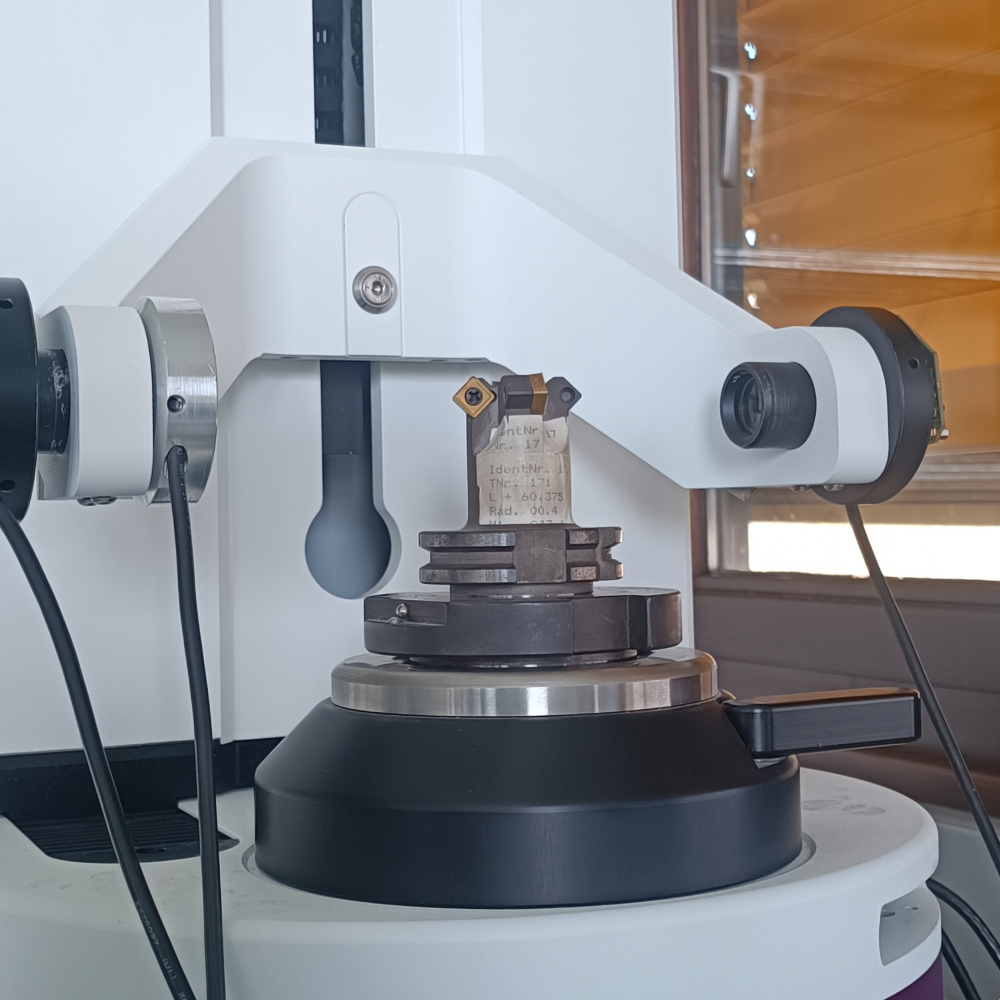
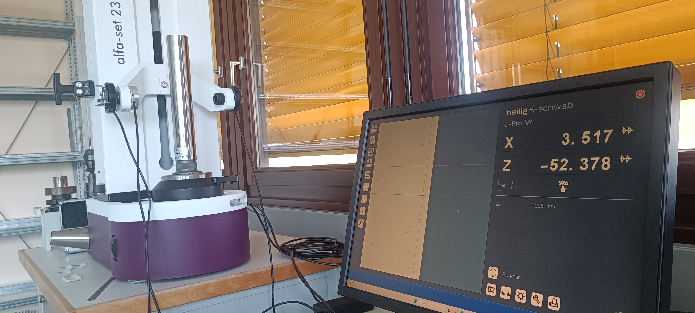
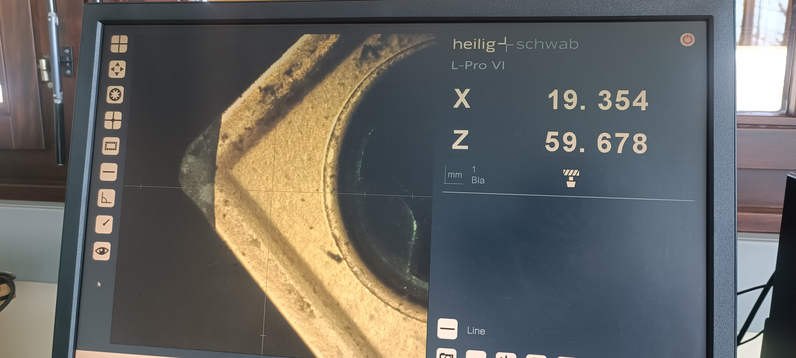
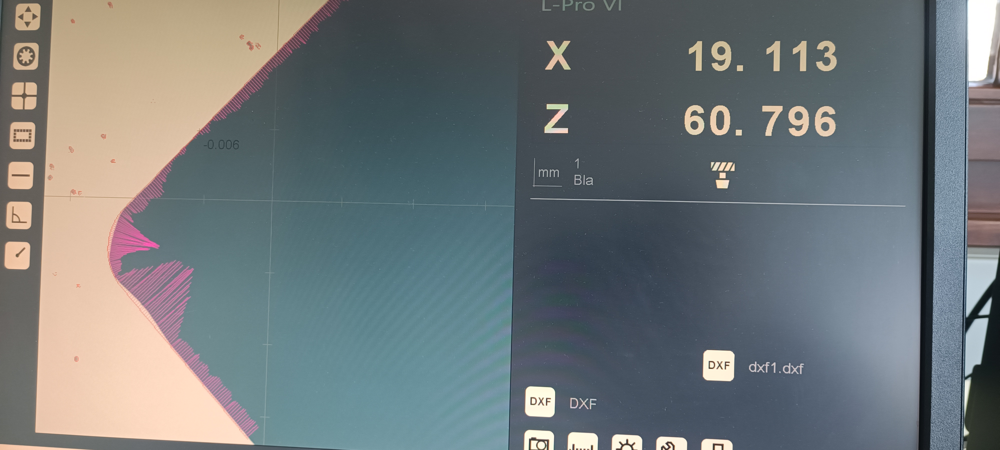

Retrofit and restoration of a tool presetter machine used for precision tool length and diameter measurement in CNC machining operations. The project involved a full mechanical overhaul, alignment calibration, and evaluation of measurement system capability to restore the machine to working precision metrology standards.




